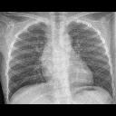
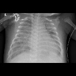
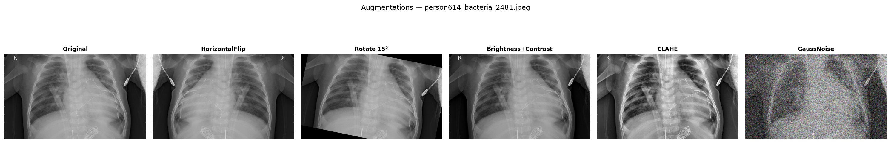
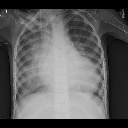
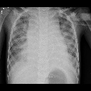
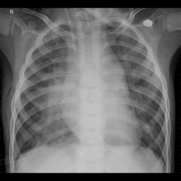
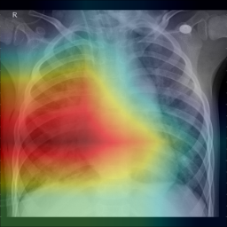

Projet — Intelligence Artificielle appliquée à la santé
TruePneumoniaAI Détecter la pneumonie sur une radio grâce à l'intelligence artificielle
Un assistant capable de regarder une radiographie du thorax et de
signaler une pneumonie en quelques millisecondes — pour aider le médecin, jamais le remplacer.
SujetAide au diagnostic médical par l'image
TechnologieRéseau de neurones (apprentissage profond)
Résultat clé95 % de bonnes réponses
Utilisez les flèches ← → (ou la barre Espace) pour naviguer.
Le problème
Pourquoi s'attaquer à la pneumonie ?
La pneumonie est une infection des poumons qui reste l'une des premières causes de
mortalité dans le monde, en particulier chez les enfants. Le diagnostic passe souvent par une
radiographie du thorax — mais l'interpréter demande un œil expert et du temps.
2,5 Mdécès liés à la pneumonie chaque année dans le monde
N°1cause infectieuse de mortalité chez l'enfant
⏱️Radiologues surchargés, et zones entières sans spécialiste disponible
L'idée : un outil automatique qui pré-trie les radios peut faire gagner un temps
précieux, attirer l'attention sur les cas urgents, et apporter un second avis là où il n'y a pas de radiologue.
L'objectif
Ce que le projet cherche à construire
Entrée : une simple photo de radiographie du thorax
Sortie 1 : « Poumon normal » ou « Pneumonie »
Sortie 2 : si pneumonie, plutôt bactérienne ou virale ?
Bonus : une carte de chaleur montrant où l'IA a regardé
Cadre clair : ce n'est pas un dispositif médical certifié.
C'est un outil d'aide à la décision — la décision finale reste au médecin.

Poumon normal

Poumon avec pneumonie
La démarche
Comment mène-t-on un projet d'IA ?
On ne « programme » pas les règles à la main : on apprend par l'exemple.
Le projet suit une méthode rigoureuse, en six étapes.
01
Collecter
Rassembler des milliers de radios déjà étiquetées par des médecins.
02
Analyser
Comprendre les données, repérer les pièges et les déséquilibres.
03
Choisir
Sélectionner la bonne technologie et préparer les images.
04
Entraîner
Laisser le modèle apprendre par essais-erreurs sur le GPU.
05
Évaluer
Mesurer honnêtement la performance sur des cas jamais vus.
06
Déployer
Emballer le tout dans une application utilisable.
Chaque étape repose sur des choix argumentés — ce sont eux qui font la qualité d'un projet d'IA. C'est le fil rouge de cette présentation.
Étape 01 — Les données
Apprendre… à partir d'exemples
Comme un étudiant en médecine apprend en voyant des milliers de cas, l'IA a besoin
d'un grand nombre de radios déjà diagnostiquées par des experts.
Chaque image est rangée par un médecin : Normal / Pneumonie
Et pour les pneumonies : origine bactérienne ou virale
1 105radios « Normal »
2 981radios « Pneumonie »
872radios mises de côté pour le test final
Premier constat : il y a ~3× plus de cas « Pneumonie » que « Normal ».
Un déséquilibre que l'on devra corriger, sinon le modèle apprend à dire « Pneumonie » tout le temps.
Étape 02 — Analyser : la rigueur avant tout
Le piège invisible : la « triche » involontaire
🎓L'analogie de l'examen
Imaginez un élève qui révise sur les questions exactes du contrôle. Il aura 20/20…
mais n'aura rien appris. Pour une IA, c'est pareil : si une même radio (ou sa copie modifiée)
se retrouve à la fois dans les exemples d'apprentissage et dans le test, le score est faux.
🛡️La solution : séparer par patient
Toutes les radios d'un même patient sont placées ensemble, soit en apprentissage,
soit en test — jamais à cheval. Résultat : le test ne contient que des patients
totalement nouveaux. Le score devient honnête.
Anecdote vécue sur ce projet : sans cette précaution, le modèle affichait
un score « parfait » trompeur. La base d'origine ne proposait que 16 images de validation —
bien trop peu pour juger quoi que ce soit. Reconstruire un découpage propre a été l'une des décisions
les plus importantes du projet.
Étape 03 — Le choix central
Ne pas réinventer la roue : le « transfert d'apprentissage »
Plutôt que d'apprendre à voir en partant de zéro (ce qui demanderait des
millions d'images et des semaines de calcul), on part d'un modèle qui sait déjà
reconnaître des formes, des contours, des textures.
14 Md'images « générales » déjà apprises
+
~9 000radios pour se spécialiser
On garde les « yeux » du modèle et on lui réapprend seulement à juger des poumons.
🧠DenseNet121 / « CheXNet »
Le modèle choisi est une architecture reconnue comme référence pour la lecture de
radios thoraciques. C'est un choix prudent et documenté, pas un pari.
Réseau de neurones convolutionnelPré-entraînéRéférence médicale
Argument : meilleure précision, entraînement bien plus rapide, et besoin
de beaucoup moins de données — décisif quand les radios annotées sont rares.
Étape 03 — Préparer les images
Donner au modèle des images « propres » et variées

Une même radio déclinée en plusieurs variantes pendant l'apprentissage
📐Standardiser
Toutes les radios sont ramenées à la même taille, sans déformer l'anatomie, et leur contraste
est rehaussé pour faire ressortir les zones pulmonaires.
🔄« Augmenter »
On montre la même radio sous de légères variations (miroir, petite rotation, luminosité…).
Objectif : éviter le par-cœur et apprendre ce qui compte vraiment, pas un détail du cliché.
Bonus : on en profite pour rééquilibrer les classes
(1 105 → 4 472 « Normal ») afin que le modèle accorde autant d'attention aux deux situations.
Étape 04 — L'entraînement
Apprendre par essais et erreurs
Le modèle regarde une radio, devine, compare à la bonne réponse,
mesure son erreur, puis ajuste légèrement ses réglages internes. Et il recommence… des
centaines de milliers de fois.
Calcul accéléré sur carte graphique (GPU)
Chaque tentative est tracée et archivée (outil MLflow)
Un tableau de bord en temps réel suit l'apprentissage
Arrêt automatique dès que le modèle cesse de progresser (anti sur-apprentissage)
~4 000images traitées par seconde
~2 minpar modèle entraîné
~30%du modèle ré-entraîné (le reste est « gelé »)
12passages complets sur les données
Étape 05 — Une décision clinique
Mieux vaut une fausse alerte qu'un malade ignoré
Le modèle ne répond pas « oui/non » : il donne une probabilité.
C'est nous qui fixons la barre à partir de laquelle on déclare « pneumonie ». Ce réglage est un
vrai choix de société médicale.
🩺Sensibilité — « ne rater aucun malade »
On veut détecter presque toutes les vraies pneumonies. Rater un malade peut être grave :
c'est l'erreur la plus coûteuse.
Objectif fixé≥ 95 %
⚖️Le compromis
En étant très prudent, on accepte quelques fausses alertes (des « Normal » signalés à tort).
Mieux vaut un examen de plus qu'une pneumonie manquée.
La « barre de décision » est calibrée après l'entraînement,
sans tout refaire — un simple réglage ajustable.
Étape 05 — Les résultats
Modèle principal : Normal vs Pneumonie
Évalué sur 872 radios de patients jamais vus. Pour plus de fiabilité, on combine
3 modèles qui votent ensemble (« ensemble »).
Justesse globale (accuracy)95,4 %
Sensibilité — pneumonies détectées95,3 %
Spécificité — « Normal » bien classés95,8 %
AUROC — qualité de discrimination0,989 / 1
95%
de diagnostics corrects sur des cas totalement nouveaux
Score honnête : aucune « triche », découpage par patient. Un niveau comparable
aux travaux publiés sur ce type de tâche.
Aller plus loin
Étage 2 : bactérienne ou virale ?
Une fois la pneumonie détectée, un second modèle tente d'en distinguer l'origine.
L'enjeu est réel : une pneumonie bactérienne se soigne par antibiotiques, pas la virale.

Bactérienne

Virale
🔬Une tâche bien plus difficile
Même pour un radiologue expérimenté, différencier les deux sur une simple radio est délicat.
Le modèle obtient ~74 % de justesse — honnête, mais loin du modèle principal.
Justesse~74 %
Honnêteté scientifique : on assume ce résultat plus modeste.
Annoncer une limite réelle vaut mieux qu'un score gonflé. C'est aussi ça, la démarche scientifique.
La confiance
Montrer où l'IA regarde : le Grad-CAM
Une IA qui dit « pneumonie » sans expliquer pourquoi n'est pas digne de confiance
en médecine. On génère donc une carte de chaleur sur la radio.
Zones rouges = régions qui ont pesé dans la décision
Zones bleues = ignorées par le modèle
Contrôle qualité : si les zones rouges tombent sur les poumons, la
décision est crédible. Si elles tombent sur une étiquette ou du matériel médical, on rejette le verdict.

La radio analysée

🔥 Foyer détecté par l'IA
Exemple réel généré par le projet — la zone chaude
tombe bien sur le poumon → décision auditable par le médecin.
Étape 06 — Le produit fini
D'un modèle… à une vraie application
Le projet ne s'arrête pas au modèle : il est emballé dans une application complète,
installable d'une seule commande.
🖥️Dashboard
Interface pour lancer et suivre les entraînements en direct.
🔌API
Un service reçoit une radio et renvoie le diagnostic + la heatmap.
📦Docker
Tout est conteneurisé : ça tourne à l'identique partout.
⚡ONNX
Le modèle est optimisé pour répondre vite, même sans GPU.
DenseNet121PyTorch LightningMONAI (imagerie médicale)AlbumentationsMLflowGrad-CAMFastAPIDocker + CUDA
Esprit critique
Limites et honnêteté
⚠️Ce que l'outil n'est pas
Pas un dispositif médical certifié
Ne remplace pas le radiologue
Entraîné sur une seule base d'images
🚀Pistes d'amélioration
Tester sur des radios d'autres hôpitaux (autres appareils)
Plus de données pour l'étage bactérien/viral
Validation par de vrais médecins
Le « décalage de domaine » : un modèle peut exceller sur ses données et faiblir
sur celles d'un autre hôpital. En avoir conscience — et le mesurer — fait partie d'un projet d'IA sérieux.
Conclusion
Une chaîne complète, de la donnée brute
au diagnostic expliqué
95 %de diagnostics corrects, score honnête
6étapes maîtrisées : données → déploiement
100 %des décisions argumentées et explicables
Au-delà du résultat, ce projet montre une méthode :
analyser, choisir avec des arguments, mesurer sans tricher, et rester lucide sur les limites.